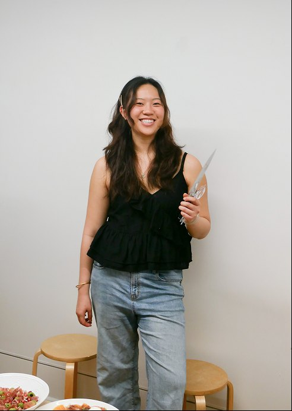

Me holding a knife, about to cut a cake I made
I am a designer who leads with gluttony & greed. I see inefficiency & incompetency in everything & want it to be better. And then I think, what is stopping me from making that happen?
I use hunger as the primary way to describe myself because nothing else quite captures who I am so holistically. Yes, I am literally hungry in the sense that I am always eating & cooking, but the very same ambition I have for food spans into the other areas of interest in my life, especially my work.
I get hungry where there is friction to resolve and systems to string together. Where there is potential for clarity, whimsy, or efficiency, there is me, hungry, greedy, gluttonous to make it happen.
Please note that while I am greedy, my core values stem from empathy & curiosity. As much as I care about pushing beyond the limits, I care equally as much for how I get there. I believe it would be pointless to be hungry without also carefully making effort to understand & connect with the peers, users, humans, involved.